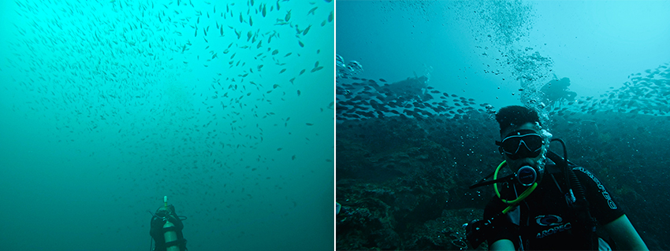
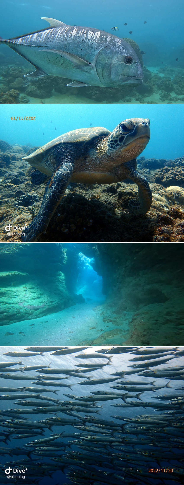

自從學了水肺潛水之後，離雙北較近的東北角成了每個假日都會拜訪的潛水勝地，有接觸過潛水的朋友們應該都知道，東北角有著大大小小的潛點，不論是有著海中沈船的深澳、豐富珊瑚礁及魚類生態的潮境公園，還是靠近宜蘭有著海底花椰菜田的萊萊秘境，每個東北角的潛點都有它吸引人的地方，而它們也都有著一個共同點，那就是有如味噌湯一般的水質，當浪況較差的時候在水裡甚至連自己的腳都看不到呢！ 難怪教練們都說在東北角潛水習慣之後到哪裡都會覺得很漂亮，畢竟80%的情況都跟左圖一樣又綠又濁呢。
| 底下兩張圖片讓大家比較一下東北角浪況差跟浪況好的差異(其實沒差多少XD) |
|  |
一直到了去年年底安排的墾丁潛水行後，我才意識到原來海可以這麼清，原來海底也可以是深藍色的… 當你從一個能見度3-5米的環境突然變成13-15米時，整個海底世界都豁然開朗了起來，許多未曾見過的魚類在身邊閒晃，有等待著潛水客餵食沙丁魚的大牛、海龜悠哉地在吃消波塊上面的海藻、成群的大梭魚有如風暴般在身邊環繞，還有半開放式的海底洞穴可以鑽，這一切一切的體驗都跟東北角好不一樣，甚至到了上岸後默默地問了自己：「我之前在東北角到底在潛什麼？？」 如果各位有幸到離島或墾丁的話，一定要嘗試看看水肺潛水，不管你是否有證照，這絕對是不虛此行的經驗！請記得指定出水口右側及合界這兩個潛點，這兩個是此行最讓我印象深刻的兩個點～
|  |
| 大牛(牛港鰺)、近距離的海龜、秘境般的海底洞穴及大梭魚群 |
這次旅程也打開了我對潛水新世界的大門，期待著去更清澈的水域潛水，原本覺得東北角潛水就夠過癮的我，現在把它當作一個練習場，用來練習潛水及上下岸的技巧，等著哪天可以前進蘭嶼、綠島、甚至是菲律賓、印尼的潛水勝地解鎖30-50米的高清海底世界！
如果未來有看到潛水文章的同仁，對於離我們較近的東北角有興趣，我也可以分享我個人東北角最喜歡的潛點，及那些地方能看到甚麼有趣的東西，也希望藉由每次分享潛水的樂趣及美景可以讓更多對水肺潛水有興趣的朋友一同潛入這個美麗的海底世界~ 就算完全不會游泳也不用擔心，因為水肺潛水唯一要做的就是記得呼吸就好！剩下的就是睜大眼睛好好地觀察四周，說不定會有意想不到的發現呢。